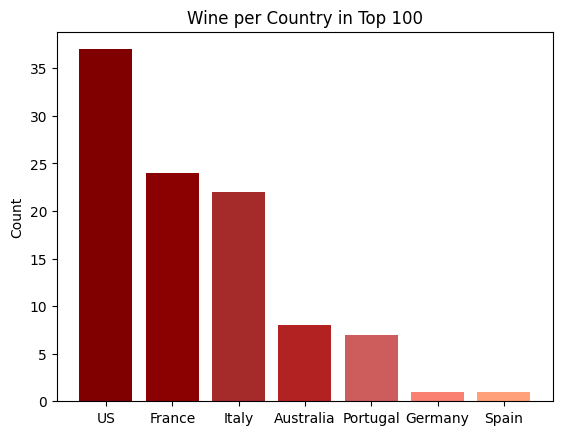

Prediction of the 2026 American Midterm Elections using Data Science, Programming, and Statistics#
The upcoming 2026 midterm elections in the United States is primed to be one of the most divisive and consequential elections, with many important swing states that will change the power balance of the United States. This project will attempt to predict the senate races for three key swing states of Michigan, Maine, and Georgia and will utilise many of the skills I have developed from the courses at AUP.
from datetime import date
from IPython.display import Markdown, display
display(Markdown(f"## Week of {date.today():%B %d, %Y}"))
Week of July 06, 2026
Data Exploration#
Importing Libraries#
#| output: true
#| echo: true
#-----------------------------------------------------------------------------------------------------------------------------------------------------------------------------------|
import pandas as pd
import numpy as np
import matplotlib.pyplot as plt
csv_path = "senate.csv"
data = pd.read_csv(csv_path)
---------------------------------------------------------------------------
FileNotFoundError Traceback (most recent call last)
Cell In[2], line 8
4 import pandas as pd
5 import numpy as np
6 import matplotlib.pyplot as plt
7 csv_path = "senate.csv"
----> 8 data = pd.read_csv(csv_path)
File ~\AppData\Roaming\Python\Python313\site-packages\pandas\io\parsers\readers.py:1026, in read_csv(filepath_or_buffer, sep, delimiter, header, names, index_col, usecols, dtype, engine, converters, true_values, false_values, skipinitialspace, skiprows, skipfooter, nrows, na_values, keep_default_na, na_filter, verbose, skip_blank_lines, parse_dates, infer_datetime_format, keep_date_col, date_parser, date_format, dayfirst, cache_dates, iterator, chunksize, compression, thousands, decimal, lineterminator, quotechar, quoting, doublequote, escapechar, comment, encoding, encoding_errors, dialect, on_bad_lines, delim_whitespace, low_memory, memory_map, float_precision, storage_options, dtype_backend)
1013 kwds_defaults = _refine_defaults_read(
1014 dialect,
1015 delimiter,
(...) 1022 dtype_backend=dtype_backend,
1023 )
1024 kwds.update(kwds_defaults)
-> 1026 return _read(filepath_or_buffer, kwds)
File ~\AppData\Roaming\Python\Python313\site-packages\pandas\io\parsers\readers.py:620, in _read(filepath_or_buffer, kwds)
617 _validate_names(kwds.get("names", None))
619 # Create the parser.
--> 620 parser = TextFileReader(filepath_or_buffer, **kwds)
622 if chunksize or iterator:
623 return parser
File ~\AppData\Roaming\Python\Python313\site-packages\pandas\io\parsers\readers.py:1620, in TextFileReader.__init__(self, f, engine, **kwds)
1617 self.options["has_index_names"] = kwds["has_index_names"]
1619 self.handles: IOHandles | None = None
-> 1620 self._engine = self._make_engine(f, self.engine)
File ~\AppData\Roaming\Python\Python313\site-packages\pandas\io\parsers\readers.py:1880, in TextFileReader._make_engine(self, f, engine)
1878 if "b" not in mode:
1879 mode += "b"
-> 1880 self.handles = get_handle(
1881 f,
1882 mode,
1883 encoding=self.options.get("encoding", None),
1884 compression=self.options.get("compression", None),
1885 memory_map=self.options.get("memory_map", False),
1886 is_text=is_text,
1887 errors=self.options.get("encoding_errors", "strict"),
1888 storage_options=self.options.get("storage_options", None),
1889 )
1890 assert self.handles is not None
1891 f = self.handles.handle
File ~\AppData\Roaming\Python\Python313\site-packages\pandas\io\common.py:873, in get_handle(path_or_buf, mode, encoding, compression, memory_map, is_text, errors, storage_options)
868 elif isinstance(handle, str):
869 # Check whether the filename is to be opened in binary mode.
870 # Binary mode does not support 'encoding' and 'newline'.
871 if ioargs.encoding and "b" not in ioargs.mode:
872 # Encoding
--> 873 handle = open(
874 handle,
875 ioargs.mode,
876 encoding=ioargs.encoding,
877 errors=errors,
878 newline="",
879 )
880 else:
881 # Binary mode
882 handle = open(handle, ioargs.mode)
FileNotFoundError: [Errno 2] No such file or directory: 'senate.csv'
Creating Main Dataset from CSV#
#| output: false
#| echo: true
#-----------------------------------------------------------------------------------------------------------------------------------------------------------------------------------|
### Renaming & Subsetting
#-----------------------------------------------------------------------------------------------------------------------------------------------------------------------------------|
## Recieves an array of all columns in the dataset
#print(data.columns)
data = data.rename(columns={ 'country':'Country', 'description':'Description', 'designation':'Designation', 'points':'Score', 'price':'Price', 'province':'Province', 'region_1':'Region 1', 'region_2':'Region 2',
'taster_name':'Critic', 'taster_twitter_handle':'Twitter Handle', 'title':'Title', 'variety':'Variety', 'winery':'Winery'})
## Creating subset of our data to be the main dataframe
df = data[[
'Country',
#'Description', 'Designation',
'Score', 'Price', 'Province',
#'Region 1', 'Region 2',
'Critic',
#'Twitter Handle',
'Title', 'Variety', 'Winery']].copy()
#| output: false
#| echo: false
#-----------------------------------------------------------------------------------------------------------------------------------------------------------------------------------|
## Describing the amount of rows by cols our dataframe has before dropping
df.shape
(129971, 8)
#| output: false
#| echo: false
#-----------------------------------------------------------------------------------------------------------------------------------------------------------------------------------|
#### Cleaning Duplicated Values
#-----------------------------------------------------------------------------------------------------------------------------------------------------------------------------------|
## Locating all instances of rows that have equal values to another row
#df.loc[df.duplicated()]
## Analyzing a duplicated row to determine why there is a duplicated row in the dataframe
#df.query('Title == "Souverain 2010 Chardonnay (North Coast)"')
## Results show every value is duplicated thus an error in the data set
## Subseting our main datafram by locating all rows that are 1st instance of there values thus no duplicated rows & resetting index
df = df.loc[~df.duplicated(subset=['Score','Price','Critic','Title','Winery'])] \
.reset_index(drop=True).copy()
df.index += 1
## Describing the amount of rows by cols our dataframe has after dropping
#df.shape
#| output: false
#| echo: false
#-----------------------------------------------------------------------------------------------------------------------------------------------------------------------------------|
#### Cleaning Missing Values
#-----------------------------------------------------------------------------------------------------------------------------------------------------------------------------------|
## Checking how many null values are in our dataframe
#main.isna().sum()
## Dropping rows with missing values in columns Country & Variety
## Red wine = dataset with unpriced wines
## White wine = dataset with priced wine
red_wine = df.dropna(subset=['Country','Variety'], inplace=False)
wht_wine = df.dropna(subset=['Country','Variety','Price'], inplace=False)
#-----------------------------------------------------------------------------------------------------------------------------------------------------------------------------------|
## Replacing null values in Critic with Unknown
red_wine.loc[:,('Critic')] = red_wine['Critic'].fillna('Unknown')
wht_wine.loc[:,('Critic')] = wht_wine['Critic'].fillna('Unknown')
## Verifying all rows in the price col have been replaced to Unknown
#red_wine.loc[red_wine['Critic'].isna()]
## Replacing null values in Price with Zero
red_wine.loc[:,('Price')] = red_wine['Price'].fillna(0)
## Verifying all rows in the price col have been set to zero
#red_wine.loc[red_wine['Price'].isna()]
## Reset the index
red_wine = red_wine.reset_index(drop=True).copy()
red_wine.index += 1
wht_wine = wht_wine.reset_index(drop=True).copy()
wht_wine.index += 1
#| output: true
#| echo: false
#-----------------------------------------------------------------------------------------------------------------------------------------------------------------------------------|
## Displaying Cleaned dataset with unpriced wine
red_wine.head(119810)
| Country | Score | Price | Province | Critic | Title | Variety | Winery | |
|---|---|---|---|---|---|---|---|---|
| 1 | Italy | 87 | 0.0 | Sicily & Sardinia | Kerin O’Keefe | Nicosia 2013 Vulkà Bianco (Etna) | White Blend | Nicosia |
| 2 | Portugal | 87 | 15.0 | Douro | Roger Voss | Quinta dos Avidagos 2011 Avidagos Red (Douro) | Portuguese Red | Quinta dos Avidagos |
| 3 | US | 87 | 14.0 | Oregon | Paul Gregutt | Rainstorm 2013 Pinot Gris (Willamette Valley) | Pinot Gris | Rainstorm |
| 4 | US | 87 | 13.0 | Michigan | Alexander Peartree | St. Julian 2013 Reserve Late Harvest Riesling ... | Riesling | St. Julian |
| 5 | US | 87 | 65.0 | Oregon | Paul Gregutt | Sweet Cheeks 2012 Vintner's Reserve Wild Child... | Pinot Noir | Sweet Cheeks |
| ... | ... | ... | ... | ... | ... | ... | ... | ... |
| 119806 | Germany | 90 | 28.0 | Mosel | Anna Lee C. Iijima | Dr. H. Thanisch (Erben Müller-Burggraef) 2013 ... | Riesling | Dr. H. Thanisch (Erben Müller-Burggraef) |
| 119807 | US | 90 | 75.0 | Oregon | Paul Gregutt | Citation 2004 Pinot Noir (Oregon) | Pinot Noir | Citation |
| 119808 | France | 90 | 30.0 | Alsace | Roger Voss | Domaine Gresser 2013 Kritt Gewurztraminer (Als... | Gewürztraminer | Domaine Gresser |
| 119809 | France | 90 | 32.0 | Alsace | Roger Voss | Domaine Marcel Deiss 2012 Pinot Gris (Alsace) | Pinot Gris | Domaine Marcel Deiss |
| 119810 | France | 90 | 21.0 | Alsace | Roger Voss | Domaine Schoffit 2012 Lieu-dit Harth Cuvée Car... | Gewürztraminer | Domaine Schoffit |
119810 rows × 8 columns
#| output: true
#| echo: true
#| label: fig-1
#| fig-cap: "Wine per Country in top 100"
#-----------------------------------------------------------------------------------------------------------------------------------------------------------------------------------|
## Create a bar plot
fig1, ax1 = plt.subplots()
## Data
countries = ['US', 'France', 'Italy', 'Australia', 'Portugal', 'Germany', 'Spain']
wine_counts = [37, 24, 22, 8, 7, 1, 1]
colors = ['maroon', 'darkred', 'brown', 'firebrick', 'indianred', 'salmon', 'lightsalmon']
ax1.bar(countries, wine_counts, color=colors)
## Adding labels and title
ax1.set_title('Wine per Country in Top 100')
ax1.set_ylabel('Count')
Text(0, 0.5, 'Count')

Conclusion#
Through our analysis we found that the highest price did correlate with the highest wine ratings. However, we also found that the country of origin influenced a role in the quality of wine. France and Italy had the highest average ratings, while the US had the most wines in the top 100.